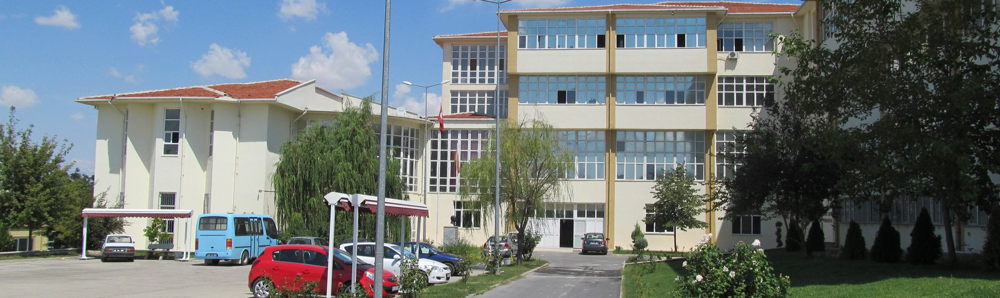

Fakültemiz ve KYK farklı kurumlar olduğu için KYK başvuruları ile ilgili herhangi bir işlem yapamamaktayız.
http://yurtkur.gsb.gov.tr linkine tıklayarak gerekli bilgilere ulaşabilirsiniz.
https://ogr.nku.edu.tr/giris.php linkini tıklayarak öğrenebilirsiniz.
e-Devlet üzerinden alacağınız Öğrenci Belgesi ile TESKİ Çorlu Şubesine başvuruda bulunup alabilirsiniz
Daha önce yükseköğretim kurumlarında başarılı olduğunuz dersler için en geç 27 Eylül 2019 tarihine kadar muafiyet talebinde bulunabilirsiniz. Sonraki yarıyıllarda tekrar muafiyet başvurusunda bulunulamaz. Başvuru yapmak için bir dilekçe ile başarılı olduğunuz dersleri gösteren onaylı transkript ve onaylı ders içeriklerini Fakültemiz Evrak Kayıt Bürosuna şahsen teslim etmeniz gerekmektedir.
Fakültemizde dersler 16 Eylül 2019 tarihinde başlayacaktır.
Engelli öğrencilerimiz engel oranını gösteren sağlık raporunu ile başvurmaları halinde, engel oranı kadar indirimli öğrenim ücreti ödeyeceklerdir.
İkinci öğretim programlarına yerleşen şehit veya gazi yakınları (kendisi, eş ve çocukları) durumlarını gösteren belge ile başvurmaları halinde, öğrenim ücreti ödemeyeceklerdir.
Kaydını Fakültemize yapan öğrencilerimizin 2019-2020 Eğitim Öğretim yılı Güz yarıyılı DERS KAYITLARI Fakültemiz tarafından yapılacaktır. (ikinci öğretim öğrencilerinin 23 Ağustos 2019 tarihine kadar öğrenim ücretlerini yatırmaları gerekmektedir)
2019-2020 Eğitim Öğretim yılı Bahar yarıyılı DERS KAYITLARINI öğrenciler şahsen yapacaklardır.
Fakültemiz Bölümlerinde hazırlık sınıfı zorunlu değildir.
İsteğe Bağlı Yabancı Dil Hazırlık Sınıfı:
Koşullarında 46 bulunan bölümlerin İsteğe Bağlı Hazırlık Sınıfı kayıtları Yabancı Diller Yüksekokulu tarafından yapılacaktır. İsteğe Bağlı Yabancı Dil Hazırlık Sınıfına kaydolmak için 0282 250 30 41- 250 30 00 numaralı telefondan veya ydyo@nku.edu.tr e-posta adresine başvurabilirsiniz. (Öncelikle e-devlet üzerinden veya şahsen kesin kaydınızı yaptırmanız gerekmektedir
Bulundukları yerdeki Halk Bankası Şubeleri ve Bankamatik cihazları ile Vakıfbank Bankamatik cihazlarından Namık Kemal Üniversitesi Öğrenci numarası ile ödeyebileceklerdir.
19-23 Ağustos 2019 tarihleri arasında
Normal öğretim programlarına yerleşen öğrenciler öğrenci katkı payı ödemeyeceklerdir.
Kayıt tarihi itibariyle ortaöğretim kurumlarından mezun olamayan öğrencilerin geçici kayıtları yapılacaktır. 31 Aralık 2019 tarihine kadar mezuniyet belgesini getirenlerin kayıtları yapılacak, getiremeyenlerin ise geçici kayıtları silinecektir.
Kayıt için verilen sürelerde kayıt işlemini tamamlamayan adaylar kayıt haklarını kaybedeceklerdir.
e-devlet üzerinden kayıt tarihleri : 19 –21 Ağustos 2019
Şahsen kayıt : 19 – 23 Ağustos 2019
E- kayıt yaptıran öğrencilerimizin ayrıca kayıt tarihlerinde Fakültemize gelmeleri veya belge getirmeleri gerekmemektedir.
Şahsen kayıt yaptırmak isteyen öğrencilerimizin 19 – 23 Ağustos 2019 tarihleri arasında Fakültemiz Öğrenci İşleri Bürosuna belirtilen belgeler ile şahsen başvurmaları halinde kayıtlarını yaptırabileceklerdir.
Fakültemize yeni yerleşen öğrenciler e-devlet üzerinden 19 –21 Ağustos 2019 tarihleri arasında www.turkiye.gov.tr adresinden kayıtlarını yapabilirler.